84 preguntas · 2 h 00 min · aprobado 75 %
MET-2 · 030.7
El viento nace de una distribución irregular de la temperatura: unas superficies se calientan más que otras, el aire caliente sube, el frío baja a ocupar su sitio, se calienta y vuelve a subir. Ese ciclo es el origen de todo el movimiento del aire.
Una thermal inversion (inversión térmica) es una capa donde la temperatura sube con la altura, al revés del gradiente normal de la troposfera: more temperature at higher altitude. Ocurre dentro de capas concretas (happens within layers), no en toda la troposfera. La típica es la de la noche en un valle, cuando el aire frío baja por las laderas y se queda abajo.
| Momento | Cuándo | Por qué |
|---|---|---|
| Mínima | Unos 30 min después de la salida del sol | El suelo sigue perdiendo calor hasta que el sol calienta más de lo que se irradia |
| Máxima | Entre las 14:00 y las 16:00, hora solar | El suelo acumula calor desde el mediodía y lo sigue pasando al aire |
La mínima no es «a medianoche» ni «justo al amanecer», y la máxima no es «a las 12:00». Las dos llegan con retraso respecto al sol: el aire lo calienta el suelo, no el sol directamente.
El altímetro es una forma de barómetro aneroide. Cualquier cambio de presión hace que la cápsula metálica parcialmente evacuada se expanda o se contraiga; la cápsula está unida a una aguja que se mueve sobre una escala calibrada en pies o metros.
Al ascender baja la presión, la cápsula se expande y la aguja gira en sentido horario indicando más altura. Al descender la presión aumenta, la cápsula se comprime y la aguja gira en sentido antihorario.
«El datum respecto al cual se calibra la escala del altímetro es un valor de presión. Hay que darle al altímetro un valor de presión desde el que empezar a medir antes de que pueda indicar una separación vertical de utilidad para el piloto.» Ese valor se selecciona en la subescala ajustable, y es el nivel de presión que el altímetro asume como cero pies.
| Reglaje | Definición del PDF | Lo que lees |
|---|---|---|
| QNH | La presión atmosférica al nivel medio del mar. La pasa al piloto una dependencia ATS. | Altitud: distancia vertical sobre el nivel medio del mar |
| QFE | El valor de presión de un aeródromo y una hora concretos, corregido a la elevación oficial. | Altura sobre ese aeródromo |
Las elevaciones de terreno y obstáculos en las cartas aeronáuticas vienen en pies sobre el nivel del mar, por eso con QNH puesto la lectura es directamente comparable con la carta.
En densidad aprendes que a más presión, más densidad, y que la presión baja al subir. En altimetría parece que a más hectopascales, más altura. No se contradicen porque hablan de cosas distintas, y las dos salen de la misma frase del PDF: «pressure, temperature and density all decrease as altitude is gained».
La presión siempre disminuye con la altura. Más presión significa siempre estar más abajo.
Densidad habla de un punto: comprimes aire y sube la densidad. Altimetría habla de niveles: más presión, más abajo. Abajo hay más presión y más densidad a la vez.
El número de la subescala no es una altura: es una orden, «llama cero al nivel donde la presión valga esto». Como más presión significa estar más abajo, meter un número más alto pone el cero más abajo, y medir desde más abajo da una cifra mayor. Subescala y aguja se mueven en el mismo sentido.
De ahí sale directamente dónde está el nivel de 1013 el día que vuelas, que es lo que preguntan las cuestiones 5 y 6 del PDF:
Pregunta 5 · QNH 1030
Con el mar a 1030, para llegar a 1013 hay que subir: el datum queda 459 ft por encima del mar. Al poner 1013 mides desde más arriba, así que la indicación cae 459 ft.
Pregunta 6 · QNH 1003
Con el mar a 1003, para llegar a 1013 hay que bajar: el datum queda 270 ft por debajo del mar. En ISA el FL100 estaría a 9.730 ft; si la verdadera es 10.000, el aire es más cálido que ISA.
Separación entre el mar y el nivel de 1013 = |QNH − 1013| × 27 ft. El signo lo decide si el QNH es mayor o menor que 1013, no una fórmula.
La presión atmosférica varía en horizontal además de en vertical, y rara vez se mantiene constante a lo largo de un vuelo.
La temperatura afecta al ritmo al que la presión decrece con la altura, y no existe ningún reglaje de altímetro que compense el error de temperatura.
El examen no pregunta «¿sube o baja la altitud verdadera?». Pregunta «¿el altímetro sobre-lee o sub-lee?». Es el mismo hecho dicho desde el instrumento en vez de desde el avión, y ese paso de traducción es donde se pierde más gente. Las cuatro situaciones del módulo, completas:
| Situación | Isobaras | El altímetro | Estás… |
|---|---|---|---|
| Hacia baja presión | Descienden | Sobre-lee | Más bajo de lo indicado |
| Aire más frío que ISA | Más juntas | Sobre-lee | Más bajo de lo indicado |
| Hacia alta presión | Ascienden | Sub-lee | Más alto de lo indicado |
| Aire más cálido que ISA | Más separadas | Sub-lee | Más alto de lo indicado |
Sobre-leer es marcar de más. Si marca de más, estás más bajo.
Las dos filas rojas son exactamente los dos refranes, y son los dos casos peligrosos. Las dos verdes son sus inversas y no matan a nadie, pero el reglaje deja de servir para aterrizar. Fíjate en la columna de isobaras: junto va con sobre-lee, separado va con sub-lee, y eso es lo que hace que frío y baja presión se comporten igual.
Esta sección entera es método de cálculo, montado a partir de lo que sí dicen los dos módulos. No la busques en el texto. Está aquí porque resuelve las preguntas 10 y 11, que son las que más cuestan.
Cuando piensas «baja la presión, sube la altura» estás en lo cierto, pero esa frase solo vale para una de las dos presiones que hay en juego, y la pregunta 10 te habla de la otra.
| Presión | Quién la decide | Si baja… |
|---|---|---|
| La que el avión siente | La posición del avión. Es la estática, la de fuera. | La indicación SUBE. Has ascendido de verdad. |
| La de la subescala | Tú, girando el mando. | La indicación BAJA. El avión no se ha movido. |
Están en lados opuestos de una resta. El altímetro no mide una presión: mide la diferencia entre la que le metes y la que siente.
Bajar la subescala no baja el avión. Sube el cero.
«Menos presión, más arriba» es cierto, y es justo por eso que la aguja cae: poner 1013 en vez de 1030 coloca el cero 459 ft más arriba. Si el cero sube y el avión se queda quieto, la distancia entre los dos se acorta.
Pregunta 10 · el avión quieto, el cero moviéndose
Avión a 2.000 ft sobre el mar en un día de QNH 1030. Lo único que cambia entre los dos lados es el número de la ventanilla. La aguja cae 459 ft porque el cero ha subido 459 ft, no porque el avión haya bajado.
Todas las fórmulas de altimetría son la misma resta entre dos peldaños de esta escalera. Si sitúas los peldaños, no necesitas memorizar ningún signo.
Aquí el nivel de 1013 está dibujado por debajo del mar, que es el caso de QNH bajo — el de la pregunta 11. Con QNH alto ese peldaño sube por encima de la línea del mar y el orden se invierte. El signo lo decide siempre si el QNH es mayor o menor que 1013, nunca una fórmula memorizada.
Es tu punto más flojo con diferencia. Mueve los dos controles y mira dónde se coloca el nivel de 1013 hPa respecto al mar. El botón Ponme a prueba te saca un caso al azar.
Esta trabaja solo con altitudes indicadas: entra una indicación y sale otra indicación. Es la de la pregunta 10, y es la versión aritmética de «subescala y aguja se mueven en el mismo sentido».
Pregunta 10: 2.000 + (1013 − 1030) × 27 = 2.000 − 459 = 1.541 ft. La indicación cae 459 ft. Si el número que metes es menor, el resultado es menor. Sin excepciones.
La altitud de presión es esta misma fórmula con la subescala nueva fijada en 1013: un aeródromo a 500 ft con QNH 1033 tiene 500 + (1013 − 1033) × 27 = −40 ft de altitud de presión. Que salga negativa es correcto.
Esta cruza de lo que marca el instrumento a dónde está el avión de verdad. Lleva las dos correcciones: la de presión, que corrige el datum, y la de temperatura, que corrige la dilatación del aire.
La corrección de presión vale cero cuando llevas el QNH local puesto, porque entonces la subescala y el QNH son el mismo número. Solo aparece cuando vuelas con 1013.
Y aquí está lo que responde tu pregunta: no hay una fórmula distinta para la altitud indicada. Es la misma relación despejada.
El segundo despeje es el que resuelve la pregunta 11: te dan la verdadera y la indicada y te piden el signo de la corrección de temperatura. Positiva significa aire cálido; negativa, aire frío.
Matiz honesto: la corrección de temperatura se calcula sobre la altitud indicada, así que al despejar la indicada aparece en los dos lados. En examen la diferencia es de segundo orden y nunca cambia qué opción marcas; usa la cifra que te den.
MSA 12.000 ft, OAT +9 °C, QNH 1023 correctamente ajustado.
ISA a 12.000 ft = 15 − 24 = −9 °C → desviación = +18 → ISA+18QNH 1030, pones 1013 en la subescala.
Fórmula 1: (1013 − 1030) × 27 = −459 ftQNH 1003, con 1013 puesto indicas 10.000 ft (FL100) y la verdadera es 10.000 ft.
Corrección presión = (1003 − 1013) × 27 = −270 ftTodo lo anterior es separación vertical. La altitud de densidad juega a otra cosa —prestaciones, no separación— y tiene constante propia: Altitud de densidad = Altitud de presión + 120 × desviación ISA. No la mezcles con las de arriba.
Para cálculos sencillos por debajo de 5.000 ft sobre el nivel del mar, el PDF indica asumir 30 pies por milibar. Cuando el problema trabaja entre niveles de presión en altura, usa 27 pies por milibar. El enunciado del examen normalmente te dice cuál usar; si no lo dice, mira la altitud.
Aeródromo a 1.000 ft sobre MSL. El QFE observado es 980 mb. ¿Cuál es el QNH?
1000 ÷ 30 = 33 mb → QNH = 980 + 33 = 1013 mbAeródromo a 2.100 ft sobre MSL con QNH de 1005 mb. ¿Cuál es el QFE?
2100 ÷ 30 = 70 mb → QFE = 1005 − 70 = 935 mbDe A (QNH 1020, elevación 1.000 ft) a B (QNH 1010, elevación 500 ft), sin cambiar la subescala. ¿Qué indicará el altímetro al aterrizar en B?
Diferencia de presión: 1020 − 1010 = 10 mbEn el Problema 3 el texto dice «el nivel de 1020 mb está 300 ft por debajo del de 1010 mb» y acto seguido suma 270. La cifra correcta es 270, que es la que usa en el cálculo y la que lleva a los 770 ft. Ese «300» es un error de redacción.
El sentido nunca se memoriza, se razona: bajando del aeródromo al mar la presión sube, luego QNH > QFE siempre que el campo esté por encima del mar. Si te sale al revés, has invertido un signo.
El 1013,25 es una constante de la atmósfera estándar. El QNH es un dato del día. Mezclarlos produce tres errores muy concretos, y conviene desactivarlos de uno en uno:
| Afirmación | Por qué | |
|---|---|---|
| «El QNH se calcula a partir de 1013» | Falso | El QNH es la presión del día del aeródromo reducida al nivel del mar. El 1013 no entra en ese cálculo en ningún momento. |
| «Con 1013 puesto el altímetro marca cero» | Falso | Marca la altitud de presión, que es la distancia al nivel de 1013 hPa. Ese nivel casi nunca coincide con el suelo que pisas. |
| «Si el QNH es 1013, la altitud de presión es cero» | Falso | Es igual a la elevación del aeródromo. El cero exige además que el campo esté al nivel del mar: son dos condiciones, no una. |
La altitud de presión se mueve alrededor de la elevación, no alrededor de cero. Con QNH alto queda por debajo; con QNH bajo, por encima. Solo coincide con la elevación el día que el QNH vale exactamente 1013.
«Altitud de presión» = lo que marcaría el altímetro de ese campo con 1013 puesto.
Nunca «cero», nunca «la elevación». Es una lectura de altímetro con un reglaje concreto, y como el nivel de 1013 casi nunca coincide con el suelo, casi nunca vale ni cero ni la elevación. En un día de alta presión sale negativa, y eso es correcto.
1. ¿Cuántas correcciones pide el enunciado? Si menciona el QNH y la temperatura, son dos, y aplicar solo una da una opción que está puesta ahí a propósito.
2. ¿Cada una lleva su signo? QNH por encima de 1013 suma, por debajo resta. Aire cálido suma, frío resta.
3. ¿Las unidades cuadran? 8 con metros, 27 y 30 con pies.
4. ¿El resultado tiene sentido físico? QNH siempre mayor que QFE en un campo elevado.
8 va con metros. 27 y 30 van con pies. Ponerle metros al 30 da un resultado plausible pero mal, y es el fallo más caro del LO porque no chirría. Y otra que cuesta tiempo en el examen: 1 hPa = 1 mb exactamente. Son la misma unidad con dos nombres, no hay ninguna conversión que hacer.
MET-1 · 030.1
Nitrogen (nitrógeno) 78 %, oxygen (oxígeno) 21 %, el 1 % restante otros gases. Esa proporción se da siempre para dry and clean air (aire seco y limpio) — es la coletilla habitual. El nitrógeno es un inert gas: no reacciona.
| Término | Qué es | Por qué importa |
|---|---|---|
| Humidity humedad | Agua en estado de vapor contenida en el aire | Solo cuenta el vapor. El agua líquida o sólida no es humedad: es nube, lluvia o hielo. |
| Condensation nuclei núcleos de condensación | Partículas hygroscopic (higroscópicas) — arena, carbono | Sólidas o líquidas, nunca un gas, porque un gas es transparente. Sin ellas no se forman nubes. |
| Aerosols aerosoles | Partículas sólidas o líquidas demasiado ligeras para caer por gravedad | Interceptan radiación solar y terrestre, reducen la visibilidad y afectan a los motores. |
| Capa | Hasta | Temperatura | Meteorología |
|---|---|---|---|
| Troposphere | Tropopausa | Baja con la altura | Casi todos los fenómenos |
| Stratosphere | Estratopausa, ~50 km | Sube con la altura | Casi ninguno. El aire fluye en capas horizontales — de ahí «stratos» |
| Mesosphere | Mesopausa, ~80 km | Baja con la altura | Ninguno |
| Thermosphere | Al espacio, sin pausa | Sube otra vez | Ninguno. Mucho electromagnetismo |
Patrón que ahorra memorizar: baja, sube, baja, sube, y cada frontera se llama «pausa» — excepto la termosfera, que no tiene pausa por arriba porque se funde con el espacio.
La tropopause no está a la misma altura en todo el planeta: 9 km en los polos, 12 km en los trópicos, 18 km en el ecuador. Donde hace más calor, la troposfera es más gruesa.
Y: el aire prácticamente nunca atraviesa la tropopausa. Los fenómenos meteorológicos se quedan debajo. Por eso es la frontera operativa del vuelo comercial.
Densidad es masa por unidad de volumen, ρ = M/V. La gravedad mantiene más aire por unidad de volumen cerca del suelo, así que la densidad es máxima en la superficie terrestre y disminuye con la altitud.
El PDF las da explícitamente y el examen las usa como distractores entre sí: te define una y te ofrece las otras dos como opciones. Hay que poder recitar cuál es cuál, no solo reconocerlas.
| Forma | Qué es exactamente | Unidad |
|---|---|---|
| Absoluta | La masa de aire contenida en un metro cúbico | g/m³ |
| Densidad relativa | Un porcentaje de la densidad estándar en superficie | % |
| Altitud de densidad | La altitud de la atmósfera estándar a la que corresponde la densidad observada | ft |
El atajo para no confundir las dos últimas: la densidad relativa se mide en por ciento, la altitud de densidad en pies. Si la respuesta habla de porcentaje y te preguntaban por altitud de densidad, es el distractor.
Casi todos los fallos de este LO tienen la misma forma: dos magnitudes en la misma frase y el instinto de moverlas en el mismo sentido. Unas sí van juntas y otras no, y no hay atajo — hay que saber cuáles son cuáles.
| Si sube… | …qué le pasa a | |
|---|---|---|
| Presión | Densidad | SUBE · van juntas |
| Temperatura | Densidad | BAJA · al revés |
| Humedad | Densidad | BAJA · al revés |
| Volumen (masa fija) | Densidad | BAJA · al revés |
| Altura | Densidad | BAJA · al revés |
| Latitud | Densidad | SUBE · van juntas |
| Densidad | Altitud de densidad | BAJA · al revés |
De las siete, solo dos van juntas: presión y latitud. Todo lo demás va al revés. Si dudas, la apuesta estadística es «al revés» — pero mejor tener la tabla.
La última fila de la tabla es la que más cuesta, y el motivo es puramente lingüístico: el término lleva dentro la palabra «densidad» y el signo se contagia. La forma de romperlo es dejar de leerlo como lo que pone.
Cada vez que veas «altitud de densidad», léela como «altitud equivalente».
Quitando la palabra «densidad» del término, el contagio desaparece y la frase se vuelve obvia: aire menos denso equivale a estar más arriba, luego la altitud equivalente sube. Y al revés: aire más denso equivale a estar más abajo. Haz la sustitución en voz baja antes de contestar, cada vez, hasta que no haga falta.
Cuidado con los enunciados que piden «la MÁS BAJA altitud de densidad». La altitud equivalente más baja es la densidad más ALTA, o sea frío, presión alta y aire seco. Si marcas calor, baja presión y humedad, has contestado a la pregunta contraria — y es un fallo de lectura, no de concepto.
El diagrama de abajo es el mismo hecho en imagen: van en sentidos opuestos.
La densidad baja. La altitud de densidad sube.
Y tiene toda la lógica: si el aire es menos denso, es que se parece al aire que en la atmósfera estándar se encuentra más arriba. La altitud de densidad no mide densidad; mide a qué altura de la ISA equivale la densidad que tienes. Menos denso = equivale a estar más alto = cifra mayor.
El mismo aeródromo al nivel del mar, tres días distintos. Barra verde y roja: la altitud de densidad. El avión no se mueve del sitio, pero en el día caluroso despega como si lo hiciera desde 2.400 ft de montaña. Cifras con la regla derivada de 120 ft por grado de desviación ISA.
Presión alta, temperatura baja y aire seco dan densidad alta, y densidad alta es buen rendimiento. Mueve los controles y mira cuánto se separa la altitud de densidad de la de presión.
| Factor | Relación | Razón que da el PDF |
|---|---|---|
| Presión | Directamente proporcional | Al aumentar la presión el aire se comprime, se reduce el volumen y aumenta la densidad. |
| Temperatura | Inversamente proporcional | Al calentar un volumen de aire se expande y la masa contenida en la unidad de volumen es menor. |
| Humedad | Inversamente proporcional | Una molécula de agua (H₂O) pesa menos que las de nitrógeno (N₂) y oxígeno (O₂). Efecto pequeño, pero hay que tenerlo en cuenta. |
La fórmula que lo unifica todo, en la notación del propio PDF: P · V = R · T.
Con la altura compiten dos efectos: baja la presión (hace bajar la densidad) y baja la temperatura (la haría subir). Gana la presión, así que la densidad disminuye al aumentar la altura.
Con la latitud, la densidad aumenta al aumentar la latitud: en los polos la presión en superficie es relativamente más alta que en el ecuador y la temperatura es mucho más fría. Los dos factores empujan en el mismo sentido. El aire es más denso en los polos.
La humedad es la que más se falla. El instinto dice «aire húmedo, aire pesado», y es exactamente al revés: el vapor de agua desplaza moléculas más pesadas por otras más ligeras.
La ISA es una vara de medir. Presión, temperatura y densidad varían mucho de un día a otro y de un lugar a otro, y se necesita una atmósfera media de referencia para comparar. Sirve para la calibración de los instrumentos del avión y para el diseño y ensayo de aeronaves. La ISA es además completamente seca, y en ella presión, temperatura y densidad disminuyen con la altura.
| Parámetro | Valor ISA |
|---|---|
| Temperatura MSL | +15 °C |
| Presión MSL | 1013,25 hPa |
| Densidad MSL | 1225 g/m³ |
| Gradiente térmico | 0,65 °C/100 m (1,98 °C/1000 ft) hasta 11 km / 36.090 ft |
| Capa isoterma | −56,5 °C constante de 11 km (36.090 ft) a 20 km (65.617 ft) |
| Inversión superior | aumento de 0,1 °C/100 m (0,3 °C/1000 ft) de 20 km (65.617 ft) a 32 km (104.987 ft) |
La tropopausa está en 36.090 ft / 11 km y la estratopausa en 104.987 ft / 32 km. Esas dos parejas de cifras se preguntan tal cual, y la forma de retenerlas es verlas apiladas, no como una lista:
Alturas a escala. Tres capas, tres comportamientos: baja, se para, sube. La temperatura mínima de toda la atmósfera estándar, −56,5 °C, no es un punto sino toda la capa central.
Las observaciones meteorológicas se dan en cifras absolutas, pero para cálculos de performance o correcciones de instrumento se usan siempre relativas a la ISA. Para exámenes el PDF autoriza el atajo de 2 °C por cada 1000 ft en lugar de 1,98.
Las temperaturas superiores a la ISA afectan negativamente a las prestaciones en despegue, crucero y ascenso. Hay que consultar las gráficas de performance sobre todo con temperatura alta, altitud alta y mucha carga: los tres a la vez es el escenario crítico.
| Viento | Fuerzas | Cómo va respecto a las isobaras |
|---|---|---|
| PGF wind gradiente de presión | Solo PGF | Perpendicular, de la alta a la baja. Teórico: solo existe muy localmente (de una habitación a otra, una olla exprés, un bosque denso) |
| Geostrophic wind (Wg) geostrófico | PGF + Coriolis | Paralelo a isobaras rectas. Nunca las cruza |
| Gradient wind viento del gradiente | PGF + Coriolis + fuerza centrífuga | Con isobaras curvas, girando alrededor de altas y bajas |
| Cyclostrophic wind ciclostrófico | Sin Coriolis | No sigue las isobaras. Solo cerca del ecuador |
Cuando la PGF y Coriolis se equilibran, el aire deja de ir hacia la baja y circula paralelo a las isobaras. En el hemisferio norte gira en sentido horario alrededor de la alta (H) y antihorario alrededor de la baja (L). En el sur, al revés.
Equilibrio geostrófico · HN
La PGF tira hacia la baja; Coriolis, a la derecha del movimiento, tira en sentido contrario. Se anulan y el viento corre paralelo, con la baja a su izquierda.
Alrededor de H y L · HN
Hemisferio norte. En el sur los dos sentidos se invierten, porque Coriolis desvía a la izquierda.
Las fuerzas se van sumando una encima de otra. Pulsa los pasos en orden, o dale a «Ver la secuencia». El botón del hemisferio invierte Coriolis.
Se suma la fuerza centrífuga a la PGF y a Coriolis: es el viento que gira siguiendo isobaras curvas alrededor de altas y bajas.
En la pizarra quedó «viento diagonal a las isobaras, saliendo de H hacia L». Para el examen, el gradient wind es el que va paralelo a isobaras curvas. El viento que cruza las isobaras en ángulo hacia la baja es el de superficie, frenado por la capa de rozamiento (más abajo). Si una opción dice «parallel to curved isobars», es el gradient wind.
Ponte de espaldas al viento: en el hemisferio norte la baja presión queda a tu IZQUIERDA; en el sur, a tu derecha. Es la Buys Ballot's law y resuelve todas estas preguntas sin dibujar nada.
| Situación | Respuesta | Por qué |
|---|---|---|
| Al NORTE de una baja, hemisferio norte | Viento del ESTE | El aire gira antihorario: por el lado norte va de este a oeste |
| Al SUR de esa misma baja | Viento del OESTE | Por el lado sur va de oeste a este |
| La baja te pasa por el SUR | Continually BACKING | Estás siempre en su lado norte: los grados van bajando (126 → 060 → 354) |
| La baja te pasa por el NORTE | Continually VEERING | Estás en su lado sur: los grados van subiendo (174 → 240 → 306) |
| Alejándote de una baja, hemisferio SUR, baja cota | Por la izquierda y algo de cara | En el sur gira horario, así que te entra por la izquierda; y el rozamiento lo mete hacia la baja, que te queda detrás |
| Bajar de altura hasta la superficie, hemisferio norte | Backs y afloja | Menos velocidad, menos Coriolis: el viento cruza las isobaras hacia la baja |
Backing es girar a MENOS grados (090 → 060), no «girar a la izquierda del avión». Y el viento siempre se nombra por de dónde viene, nunca por hacia dónde va: si el aire se mueve hacia el oeste, el viento es del este.
Girar hacia menos grados se dice backing; hacia más grados, veering. En el hemisferio norte, al bajar hacia el suelo el viento backs y pierde fuerza. Al subir desde la superficie, veers y gana fuerza.
| Tipo | Origen | Dónde e intensidad |
|---|---|---|
| Mecánica | Obstáculos físicos: edificios, montañas | A sotavento del obstáculo y a baja cota. Normalmente ligera |
| Térmica o convectiva | Remolinos por las corrientes verticales que genera el calor del suelo | Ligera pero muy incómoda. Más fuerte en verano al mediodía solar |
| De estela wake turbulence | Torbellinos de punta de ala (wingtip vortices) | La intensidad depende de la categoría del avión que va delante |
| Ondas de montaña | Viento fuerte y estable cruzando una cordillera | Ver abajo |
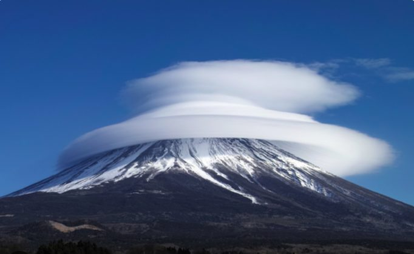
Esto no entró en MET-1 a MET-4. Está montado desde los objetivos de aprendizaje de EASA, que es lo que mide el examen.
Un jet stream es una banda estrecha de viento muy fuerte justo bajo la tropopausa. Para que se llame jet, el núcleo tiene que alcanzar 80 kt o más.
La clear air turbulence (CAT) es máxima en el lado frío del núcleo y algo por debajo de la tropopausa, donde la cizalladura es mayor. El núcleo en sí suele dar vuelo liso. Salida recomendada de una CAT: cambiar de nivel y alejarse hacia el lado cálido.
Sea breeze · de día
Día, aire fresco, desde el mar. Alcance de unas 8–15 NM según la pizarra.
Land breeze · de noche
Noche, aire frío, desde tierra. Más débil que la brisa marina.
Valley breeze · anabatic
De día. Anabatic = sube. Brisa cálida.
Mountain breeze · katabatic
De noche. Katabatic = baja. El frío se acumula abajo: inversión térmica.
| Viento | Cuándo | Sentido | Clave |
|---|---|---|---|
| Sea breeze | Día | Del mar a la tierra | Fresco. La tierra se calienta antes que el mar |
| Land breeze | Noche | De la tierra al mar | Frío y más débil que la brisa marina |
| Valley breeze | Día | Sube por la ladera | Anabatic: el aire caliente, menos denso, sube |
| Mountain breeze | Noche | Baja por la ladera | Katabatic: el aire frío, más denso, baja. Inversión térmica |
| Foehn | Con viento sobre una montaña | Baja por sotavento | Cálido y seco a sotavento. Suele acompañar a las ondas de montaña |
Nube de un lado y aire cálido y seco del otro. Complemento: llega más caliente abajo porque ha soltado su humedad como lluvia en barlovento y baja seco, calentándose más deprisa de lo que se enfrió al subir.
El viento es un vector: tiene dirección e intensidad.
La dirección del viento es siempre desde dónde VIENE.
Se da en grados como un rumbo: viento del norte 360 (o 000), del este 090, del sur 180, del oeste 270. Un «viento 270» sopla desde el oeste hacia el este. La flecha de la veleta apunta hacia donde viene el viento.
| Dato | Cómo se da |
|---|---|
| Dirección magnética | La usa la aviación (magnetic north, norte magnético) |
| Dirección verdadera | La usan los meteorólogos (true north, norte geográfico) |
| Intensidad | En knots (nudos, kt) = millas náuticas por hora. 1 NM = 1,852 km |
Se suman: banderín 50, pluma entera 10, media 5. Las plumas van en el extremo del que viene el viento; el círculo es la estación.
Cada hemisferio tiene tres cells (células) de circulación que llegan hasta la tropopausa, cada una en una masa de aire.
| Célula | Masa de aire | Detalle |
|---|---|---|
| Hadley cell | Equatorial air mass (ecuatorial) | El aire sube en el ecuador y baja en los anticiclones subtropicales |
| Ferrel cell | Subtropical air mass (subtropical, donde está España) | Entre los anticiclones subtropicales y la zona donde choca con el aire polar |
| Polar cell | Polar air mass (polar) | Anticiclón polar. Donde el aire polar choca con el subtropical se forma una zona de convergencia |
Las latitudes aproximadas (0°, 30°, 60°, 90°) son un complemento: en clase se dio por masas de aire. Anticiclones en la zona subtropical y en el polo; convergencia donde choca el aire polar con el subtropical.
El agua está en la atmósfera en los tres estados y cambia de uno a otro sin parar. Cada cambio absorbe o libera calor latente, y eso es lo que mueve la energía de la atmósfera.
| Cambio | Nombre | Calor |
|---|---|---|
| Líquido → vapor | Evaporation | Absorbe (enfría el entorno) |
| Vapor → líquido | Condensation | Libera (calienta el entorno) |
| Sólido → vapor | Sublimation | Absorbe |
| Vapor → sólido | Deposition | Libera |
| Sólido → líquido | Melting | Absorbe |
| Líquido → sólido | Freezing | Libera |
Humedad es agua en estado de VAPOR. El agua líquida de una nube o el hielo de un cirro no cuentan como humedad: ya han cambiado de estado.
La humidity es la cantidad de vapor de agua que hay en el aire. La relative humidity (humedad relativa, RH) es un porcentaje: las moléculas de vapor que contiene una masa de aire frente a las máximas que podría contener a esa temperatura. Si de cuatro moléculas dos son de vapor, la RH es del 50 %.
El aire caliente admite más vapor de agua que el aire frío.
De ahí sale todo lo demás: enfriar una masa de aire sin quitarle vapor sube su humedad relativa, porque el mismo vapor ocupa un porcentaje mayor del máximo. Por eso las nubes se forman enfriando, no mojando.
La cantidad de vapor no cambia; lo que cambia es cuánto cabe. Al llegar al 100 % la masa está saturada y el vapor sobrante se condensa sobre los núcleos en gotas —o en cristales de hielo si está bajo cero—, y la RH sigue siendo del 100 %.
30/02 es OAT +30 °C y rocío +2 °C. Cuanto más cerca están las dos cifras, más cerca está la saturación.| Proceso | Qué pasa | Resultado |
|---|---|---|
| Adiabatic expansion aire que asciende | Menos presión, más volumen, baja la temperatura y sube la RH | Saturación y formación de nubes. Es el aire inestable, típico de la borrasca |
| Adiabatic compression aire que desciende | Menos volumen, más temperatura y baja la RH | Disipación de las nubes. Es la estabilidad del anticiclón |
Las nubes también se disipan por mezcla con aire más seco de los alrededores o por corrientes verticales descendentes. Y una misma nube puede tener a la vez parte de agua líquida y parte de hielo.
La forma de ordenarlos: una niebla se forma enfriando el aire hasta su punto de rocío, o bien añadiéndole agua hasta saturarlo.
| Mecanismo | Tipos |
|---|---|
| Por enfriamiento cooling | Radiación · Advección · Orográfica |
| Por aporte de agua adding water | Frontal · Sea smoke |
Sin viento la humedad se queda pegada al suelo y sale rocío → 1 a 5 kt: NIEBLA → 5 a 10 kt: NEBLINA → más de 10 kt: la capa se levanta y es un ESTRATO.
Es una regla de aula para entender que todo depende de cuánto se mezcle el aire, y no cuadra al dedillo con las cifras del PDF (radiación con 2 a 8 kt, advección con hasta 15 kt). Para el examen manda el PDF; esta escalera sirve para razonar el porqué.
| Tipo | Cómo se forma | Condiciones | Cómo se deshace |
|---|---|---|---|
| Radiation fog de radiación | El suelo irradia su calor de noche y enfría por contacto el aire que tiene encima por debajo del punto de rocío | Cielo despejado, humedad alta y viento flojo de 2 a 8 kt. En calma total sale rocío, no niebla. Otoño e invierno, de noche y primera hora. Solo sobre tierra, primero en los valles, y en anticiclones, dorsales y collados | Con el sol (la convección la levanta) o con viento fuerte, que la sube y la convierte en estrato |
| Advection fog de advección | Aire cálido y húmedo que se desplaza sobre una superficie fría, de tierra o de mar | Viento de hasta 15 kt para mover la masa, RH alta, y la superficie más fría que el punto de rocío del aire. Sobre tierra en invierno; sobre el mar a final de primavera | Con un cambio de masa de aire o si el viento pasa de 15 kt, que la levanta a estrato |
| Orographic fog o hill fog | Aire húmedo que sube por la ladera y satura: es una nube pegada al monte | Visibilidad de 200 m o menos | Es local y pequeña: no afecta a las operaciones |
| Steaming fog humo ártico · sea smoke | Aire frío de tierra que pasa sobre agua más cálida: la evaporación satura el aire frío | El aire debe ser muy estable. Hasta 500 ft de espesor. Típica de fiordos y latitudes altas | Aumento de la intensidad o cambio de dirección del viento |
| Frontal fog | En un frente cálido u ocluido: la precipitación satura el aire y baja la base de la nube hasta el suelo | Banda de hasta 200 NM de ancho que viaja con el frente. El relieve la agrava | Cuando pasa el frente |
En el cuaderno pone que la niebla de advección «puede aguantar con viento de 15 a 25 kt». El PDF oficial dice lo contrario: se forma con viento de hasta 15 kt, y por encima de 15 kt se levanta y se convierte en estrato. Quédate con la versión del PDF.
| Condición | Detalle |
|---|---|
| Vapor de agua | Humedad disponible en la masa de aire |
| Enfriamiento | Casi siempre por ascenso: el aire sube, la presión baja, se expande y se enfría |
| Núcleos de condensación | Partículas higroscópicas sobre las que condensa el vapor |
Con OAT +20 °C y rocío +12 °C: (20 − 12) × 125 = 1.000 m AGL. Cuanto menor es la separación entre temperatura y rocío, más baja está la nube.
Dos criterios a la vez: por altura (que decide la temperatura y por tanto el engelamiento) y por tipo de crecimiento (que decide la precipitación y la turbulencia).
| Piso | Temperatura | Prefijo | Engelamiento |
|---|---|---|---|
| Bajas hasta ~2.000 m | Normalmente por encima de 0 °C | Sin prefijo | Normalmente no |
| Medias | Entre 0 y −45 °C | ALTO- | Sí · es el piso peligroso |
| Altas | Por debajo de −45 °C | CIRRO- | No. No precipitan, como mucho virga |
| Crecimiento | Precipitación | Turbulencia |
|---|---|---|
| Stratiform horizontal | Uniforme, continua o intermitente | Ligera o media |
| Cumuliform vertical · convectivas | Chubascos (showers), granizo y tormentas | Media o severa |
Izquierda, las estratiformes de cada piso; derecha, el cumulonimbo, que se salta la clasificación por pisos porque los atraviesa todos.
| Nube | Piso | Lo que la identifica |
|---|---|---|
| Stratus · ST | Baja | Muy baja, de bordes difusos, da llovizna. La niebla es un estrato que toca el suelo |
| Stratocumulus · SC | Baja | Estrato «que cumulea»: algo de desarrollo vertical, más precipitación y más turbulencia que el ST |
| Nimbostratus · NS | Baja o media | Grande, de bordes difusos, lluvia continua. Nunca precipitación severa. Nimbo significa lluvia |
| Altostratus · AS | Media | Aspecto estriado. Engelamiento y gotas subenfriadas, lluvia ligera y continua |
| Altocumulus · AC | Media | Cielo «empedrado». Más densa y más turbulenta que el AS |
| Cirrus · CI | Alta | Cristales de hielo, filamentosa |
| Cirrocumulus · CC | Alta | Como el altocúmulo pero más transparente. Puede indicar zona de turbulencia |
| Cirrostratus · CS | Alta | Da el halo solar o lunar |
| Cumulus · CU | Vertical | Base plana y bordes definidos, se forma cerca del suelo. Turbulencia debajo y a su nivel, no por encima. Granizo poco frecuente |
| Towering cumulus · TCU | Vertical | Cúmulo con mucho más desarrollo vertical |
| Cumulonimbus · CB | Vertical | La más extensa: del suelo a la tropopausa. Tormentas, granizo, yunque arriba y turbulencia muy fuerte |
En Fase 0 no hay fotos: se pregunta por el nombre y la abreviatura, no por la imagen (eso llega en el ATPL). Hay que saber decirlas en inglés y reconocer la abreviatura.
Hay que saberse el nombre en inglés y la abreviatura, no los detalles.
| Español | Inglés | Abreviatura |
|---|---|---|
| Llovizna | Drizzle | DZ |
| Lluvia | Rain | RA |
| Lluvia engelante | Freezing rain | FZRA |
| Nieve | Snow | SN |
| Granizo | Hail | GR |
| Forma | Cómo cae | De qué nube |
|---|---|---|
| Showers chubascos | Mucha agua en poco tiempo, con viento | Cumuliformes |
| Uniform uniforme | Más cantidad total, pero repartida: continua o intermitente | Estratiformes |
MET-3 · 030.11
Hay precipitación cuando el agua llega al suelo.
Si se evapora por el camino, no es precipitación: es virga. Es el típico enunciado de «lluvia que sale de la base de la nube pero no llega al suelo».
Coalescence theory (coalescencia): la gota más grande atrapa a las más pequeñas al caer y así crece hasta poder precipitar.
Superficie de separación entre dos masas de aire de distinta temperatura. No se mezclan: el aire cálido, menos denso, siempre acaba por encima del frío. Todos los frentes tienen pendiente, así que en altura el frente está por delante de su posición en superficie. Se mueven con el viento y se dibujan en los mapas sinópticos.
Si las dos masas circulan una junto a otra sin apenas interacción, el frente es cuasi-estacionario.
| Warm front | Cold front | |
|---|---|---|
| Qué pasa | El aire cálido sustituye al frío y asciende por encima de él | El aire frío sustituye al cálido y se le mete por debajo |
| Pendiente | 1:150 · muy tendida | 1:80 · mucho más vertical |
| Velocidad | Lento. Avanza a 2/3 del viento geostrófico | Rápido. Avanza al viento geostrófico completo |
| Nubes | Estratiformes, en este orden al acercarse: CI → CS → AS → NS | Cumuliformes: CU y CB embebidos |
| Precipitación | Empieza floja y aumenta poco a poco hasta que pasa el frente. Banda ancha (300 km) | Chubascos, granizo y tormenta. Banda estrecha (200–300 km) |
| Visibilidad | Empeora, y puede acabar en niebla frontal | Mala durante el chubasco, y muy buena al pasar |
| Presión | Cae y al pasar se frena o se para | Cae y al pasar sube |
| Viento | Rola a la derecha (veers) | Rola a la derecha (veers), de golpe |
| Temperatura | Sube | Baja de golpe, y el rocío también |
Los dos frentes hacen rolar el viento a la derecha en el hemisferio norte. Lo que los distingue es qué hace la presión y la temperatura al pasar: en el cálido la temperatura sube y la presión deja de caer; en el frío la temperatura se desploma y la presión empieza a subir.
La nube de un frente la fabrica el aire cálido al ascender, así que pertenece al sector cálido. Pero como sube por encima de la cuña de aire frío, desde el suelo la ves sobre la zona fría. Por eso en los apuntes de clase aparece escrito de las dos maneras seguidas: las dos frases describen lo mismo visto desde sitios distintos.
El frente frío va más rápido que el cálido, lo alcanza y levanta el sector cálido del suelo. Se forma cuando la presión de la borrasca deja de caer (frontolysis), es decir, al final de la vida de la depresión.
| Tipo | Cuándo | Qué queda en superficie | Tiempo |
|---|---|---|---|
| Oclusión cálida | El aire por delante del frente cálido es más frío que el de detrás del frío. Más común en invierno | Solo se ve el frente cálido: su eje es la continuación del cálido | Banda de lluvia ancha y de tipo estable. Peligro de lluvia engelante |
| Oclusión fría | El aire de detrás del frente frío es más frío que el de delante del cálido. Más común en verano | Solo se ve el frente frío: su eje es la continuación del frío | Banda estrecha, con CB y NS |
El tiempo de una oclusión suele ser malo porque concentra todo el mal tiempo frontal en una banda más estrecha, con nubes mezcladas (CB embebidos en NS), y como aparece cuando la borrasca ya se mueve poco, dura mucho. Las oclusiones se desplazan más o menos a la velocidad de un frente frío.
En el cuaderno la pendiente del frente frío aparece como «2 %». El PDF dice 1:80, que es un 1,25 %. La del cálido, 1:150, sí coincide con el 0,66 % del cuaderno.
Una masa de aire es un gran volumen de aire con temperatura y humedad más o menos constantes en la horizontal. Adquiere esas propiedades al quedarse parada sobre una superficie uniforme, que siempre es una zona de altas presiones. Por eso en origen toda masa de aire es estable.
| Se nombra por | Opciones | Qué implica |
|---|---|---|
| Latitud · temperatura | Polar, Tropical (y Ártica) | Polar hacia latitudes bajas: se calienta por abajo y se vuelve inestable. Tropical hacia latitudes altas: se enfría por abajo y se vuelve estable |
| Origen · humedad | Marítima o Continental | Marítima: absorbe humedad y satura en capas bajas. Continental: se mantiene seca |
De ahí salen las cuatro del examen: PM (Polar Maritime), PC (Polar Continental), TM (Tropical Maritime) y TC (Tropical Continental).
Anticiclón (high, H): el aire divierge en superficie y desciende (subsidence). Al bajar se comprime, se calienta, baja la humedad relativa y las nubes se deshacen: buen tiempo.
«Anticiclón = buen tiempo» vale para la nube de desarrollo, no para la visibilidad. El anticiclón frío de invierno es justo la situación de niebla que cierra aeropuertos.
Tipos que el examen distingue: anticiclón cálido (subtropical, se extiende hasta altos niveles, permanente, como el de las Azores) y anticiclón frío (térmico, somero, invernal, como el siberiano). El anticiclón de bloqueo se queda clavado y desvía las borrascas: misma situación durante días.
Capítulo entero sin dar en Fase 0 y con peso real en el examen. Recreado desde los LO de EASA.
Ciclón tropical (tropical revolving storm): la borrasca más profunda que existe. Según la zona se llama huracán (Atlántico y Pacífico este), tifón (Pacífico oeste) o ciclón (Índico).
Nacen en el este del océano y van hacia el OESTE con los alisios a 10–15 kt; hacia los 20–25° de latitud recurvan hacia el polo y luego al este, perdiendo fuerza al pasar sobre tierra o agua fría.
MET-1 y MET-2 · 030.9
| Sistema | En superficie | Tiempo | Forma alargada |
|---|---|---|---|
| Low (L) borrasca, depresión | El viento converge y asciende | Bad weather (Wx): nubes, lluvia, viento | Trough (vaguada) |
| High (H) anticiclón | El viento diverge y desciende (subsides) | Sin nubes y con poco viento. Forma redondeada | Ridge (dorsal) |
| Col collado | Sin cambios de presión | Viento flojo, tiempo intermedio | — |
«High pressure systems are characterized by…» → subsidence. Tormentas, ascenso y convergencia describen la borrasca. Y la forma alargada: trough sale de una baja; ridge, de una alta.
Depresión (low, L): el aire converge en superficie y asciende. Al subir se expande, se enfría, satura y forma nubes: mal tiempo.
Las no frontales, que son las de este subcapítulo: térmica (calentamiento del suelo en verano, somera), orográfica a sotavento de una cordillera, de sotavento (lee depression), polar (aire polar sobre mar más cálido, con convección fuerte) y secundaria, que se forma en la periferia de una borrasca principal y suele ser más activa que ella.
El subcapítulo más pesado de Climatología: 22 objetivos de aprendizaje de los 37 del capítulo.
Zona de Convergencia Intertropical: donde convergen los alisios de los dos hemisferios. Es una baja presión: convergencia, ascenso y cumulonimbos de gran desarrollo, con cimas que pasan de FL500.
Lo que la estropea es polvo, arena y humo — partículas sólidas, o sea calima. El harmattan del noreste sobre África occidental deja 1–2 km de visibilidad sin una gota de agua.
En los trópicos apenas hay frentes: lo que manda es el ciclo diario. Tormentas por la tarde sobre tierra, de madrugada sobre el mar.
Las latitudes medias viven en el flujo del oeste del frente polar: borrascas y frentes que pasan uno detrás de otro, con tiempo que cambia cada pocos días.
Todo el capítulo 050.08 (8 preguntas del examen, casi un 10 %) se quedó fuera de Fase 0. Esto es lo que piden los LO.
Clasificación por latitud y por continentalidad:
| Zona | Temperatura | Precipitación |
|---|---|---|
| Ecuatorial | Alta y casi constante | Abundante todo el año, convectiva de tarde |
| Tropical | Alta, poca amplitud anual | Estación húmeda y estación seca |
| Subtropical | Veranos calurosos, inviernos suaves | Verano seco (anticiclón), invierno lluvioso |
| Templada | Cuatro estaciones marcadas | Repartida, de origen frontal |
| Polar | Muy baja todo el año | Escasa: aire frío = poco vapor |
Subtropical mediterráneo: en verano manda el anticiclón de las Azores (seco) y en invierno bajan las borrascas del frente polar. El interior es continentalizado; las costas, marítimas.
En MET-2 se dieron las brisas, el Foehn y los vientos de ladera (están en 050.02.04). Lo que falta son los vientos locales con nombre propio, que es lo que pregunta este subcapítulo.
| Viento | Dónde | Qué es |
|---|---|---|
| Mistral | Valle del Ródano → golfo de León | Frío, fuerte, del norte, canalizado. Cielo despejado |
| Bora | Costa del Adriático | Catabático frío y racheado, muy turbulento |
| Siroco | Sáhara → Mediterráneo | Cálido del sur, con polvo; se humedece al cruzar el mar |
| Harmattan | África occidental | Alisio del NE con polvo: visibilidad de 1–2 km |
| Khamsin / Ghibli | Egipto / Libia | Del sur, muy cálido y seco, con tempestades de arena |
| Chinook | Rocosas, lado este | Foehn: cálido y seco, funde la nieve en horas |
| Tramontana / Cierzo | Cataluña / valle del Ebro | Del NW, frío y fuerte, canalizado por el relieve |
| Levante | Estrecho de Gibraltar | Del este, húmedo; nube de estancamiento en el Peñón |
Casi todos son lo mismo con otro nombre: aire frío que se derrama por gravedad (catabático: Mistral, Bora, Cierzo) o aire que baja por sotavento calentándose a 3 °C/1000 ft (Foehn: Chinook, Siroco al sur de los Alpes).
La freezing rain está hecha de supercooled water: agua todavía líquida por debajo de cero grados que se congela al golpear el avión. Es peligrosa porque modifica el perfil alar. Hay que preocuparse en zonas húmedas, con nube o precipitación a la vista, entre 0 y −45 °C.
| Tipo | Gotas | Aspecto | Dónde | Por qué es peligroso |
|---|---|---|---|---|
| Rime ice escarcha | Pequeñas, se congelan al instante | Rugoso, opaco y puntiagudo | En cualquier nube, de 0 a −45 °C | Deforma el borde de ataque y baja el ángulo de ataque crítico |
| Clear ice hielo claro | Grandes: parte se congela y el resto se extiende antes de helarse | Capa lisa y transparente | En nubes de tormenta, de 0 a −10 °C | Más denso y difícil de quitar: se rompe mal y se queda |
La palabra clave es el tamaño de la gota: pequeñas → rime, rugoso y opaco; grandes → clear ice, liso y transparente. Y el rango: el clear ice vive en la franja estrecha de 0 a −10 °C dentro de nubes de tormenta.
Para que se forme un cumulonimbus hacen falta las tres a la vez: masa de aire inestable, humedad abundante y un disparo que inicie el ascenso (una vaguada, un frente, el calentamiento del suelo o el relieve).
| Fase | Corrientes | Qué se ve |
|---|---|---|
| 1 · Development o fase cumulus | Solo ascendentes | Cúmulo que crece a towering cumulus. Aire cálido subiendo. Todavía no precipita |
| 2 · Maturity | Ascendentes y descendentes a la vez | Empieza la precipitación y los primeros rayos. Granizo, engelamiento y turbulencia severa. Se forma el yunque |
| 3 · Dissipating | Solo descendentes, frías | La lluvia va cesando y la nube se deshace: queda el yunque extendido |
Lo más fuerte de la tormenta está entre la segunda y la tercera fase.
La pregunta típica va al revés: lo que marca el comienzo de la fase madura son los primeros rayos y la primera lluvia desde la base. En la fase 1 solo hay ascendentes y aún no cae nada.
Corriente descendente violenta (downdraft) que golpea el suelo y se abre en todas direcciones. Es el peligro de la tormenta en aproximación y despegue: primero da viento en cara, luego lo pierde de golpe y pasa a viento en cola.
Lo que lo hace peligroso no es solo perder velocidad: la corriente que te llega por arriba y por abajo cambia el ángulo de ataque del ala, y con poca altura y poca energía eso puede acabar en entrada en pérdida.
Dale a «Ver el ciclo» y fíjate en las flechas: en la primera fase solo suben, en la madura suben y bajan a la vez, y en la disipación solo bajan.
| Término | Visibilidad | Qué la reduce |
|---|---|---|
| Fog · niebla METAR: FG | Menos de 1.000 m | Gotas de agua. RH cerca del 100 % |
| Mist · neblina METAR: BR | 1.000 m o más (hasta 5.000 m) | Gotas de agua muy pequeñas. RH por encima del 95 % |
| Haze · calima METAR: HZ | Reducida, y no se cifra por encima de 5.000 m | Partículas sólidas secas: arena, polvo o humo |
La diferencia de examen entre niebla y neblina es el agente y la cifra: agua en las dos, pero por debajo de 1.000 m es niebla. La calima no es agua, son partículas sólidas, y suele quedar atrapada bajo una inversión.
La mala visibilidad va casi siempre con condiciones estables: inversión y viento flojo. Y la niebla, en el fondo, es un estrato que toca el suelo.
Turbulencia es el flujo de aire normal al que se le añaden remolinos (eddies) en movimiento: corrientes circulares de aire. Una wind gust (racha) es un aumento breve y repentino de la intensidad del viento.
| Categoría | Definición |
|---|---|
| Light | Se nota, pero no altera el vuelo |
| Moderate | Desviaciones de rumbo y de altitud |
| Severe | Lo de la moderada más pérdida momentánea del control |
Ojo: la categoría es subjetiva para cada avión. La misma turbulencia es severa en una avioneta y moderada en un reactor.
En MET-4 se dieron las ondas de montaña y el rotor (están en 050.02.05). Este subcapítulo junta todo lo que la montaña le hace al avión.
La parte de altimetría de montaña y la de prestaciones por altitud de densidad no se trataron como peligro de montaña. El examen las pregunta aquí.
Cizalladura (wind shear): cambio de velocidad y/o dirección del viento en una distancia corta, vertical u horizontal. No es turbulencia: es un cambio de viento, y lo que mata es el salto brusco de IAS.
En clase solo se vio el microburst. El examen cuenta cuatro fuentes de cizalladura a baja cota: tormentas, frentes (en el cálido es moderada pero en banda ancha, con inversión; en el frío es brusca y estrecha), inversiones (viento mucho más fuerte encima) y ondas de montaña a sotavento.
Tornado: columna de aire en rotación violenta que une la base del cumulonimbo con el suelo.
Una inversión es una capa donde la temperatura SUBE con la altura, al contrario de lo normal. Es la situación más estable que existe.
En clase apareció como «capa donde la temperatura sube». El examen pide además la cizalladura asociada y la isotermia, que es el caso intermedio: la temperatura no cambia con la altura.
Es ULTRA importante: hay que saberse las abreviaturas y el número de oktas de cada una.
El cielo se divide en ocho octavos. FEW, SCT, BKN y OVC son los cuatro grupos que aparecen en un METAR; SKC y NSC dicen que no hay nada reseñable.
| Abreviatura | Significa | Oktas |
|---|---|---|
| SKC | Sky clear · despejado | 0 |
| NSC | No significant clouds | menos de 1 |
| FEW | Pocas | 1–2 |
| SCT | Scattered · dispersas | 3–4 |
| BKN | Broken · fragmentadas | 5–7 |
| OVC | Overcast · cubierto | 8 |
| CAVOK | Ceiling and visibility OK | Visibilidad ≥ 10 km, sin nubes bajo 5000 ft AGL (o la altitud mínima de sector) y sin fenómenos significativos |
| Qué es | Cuáles | |
|---|---|---|
| Observación report | Lo que el tiempo es o era en un momento concreto | METAR, SPECI, ATIS, VOLMET, imágenes de satélite y radar |
| Pronóstico forecast | Lo que se espera, con hora de emisión y periodo de validez | TAF, TREND, GAMET/AIRMET, SIGMET, mapas significativos |
En España los emite AEMET siguiendo la norma OACI, y van en el AIP GEN 3-5.
05/M02 es +5 °C y −2 °C.9999 es visibilidad de 10 km o más. Si un grupo no está disponible se cifra con barras: ////.G de gusting para las rachas (25015G28KT) y un segundo grupo dddVddd cuando la dirección es variable. En 06003KT 350V100 el viento viene de 060° con 3 kt, oscilando entre 350° y 100°.LEMD Barajas, LEVS Cuatro Vientos, LEDA Lleida.LEVS Cuatro Vientos · 180940Z día 18 a las 09:40 UTC · 25015G28KT viento de 250° a 15 kt con rachas de 28 · 3000 visibilidad 3.000 m · +RA lluvia fuerte · BKN035 5–7 octas con base a 3.500 ft AAL · 05/M02 +5 °C y rocío −2 °C · Q1002 QNH 1002 hPa · NOSIG sin cambios significativos en las dos horas siguientes.
1 · Visibilidad de 10 km o más. 2 · Ninguna nube por debajo de 1.500 m (5.000 ft) o de la altitud mínima de sector, la que sea mayor. 3 · Ningún CB ni TCU, estén a la altura que estén. 4 · Ningún fenómeno significativo.
La trampa habitual es la tercera: un CB por encima de 5.000 ft ya impide poner CAVOK.
El tiempo significativo presente (WX) se cifra juntando las columnas en este orden: intensidad + descriptor + fenómeno. Así, +TSRA es tormenta con lluvia fuerte, VCSH chubascos en las proximidades y FZDZ llovizna engelante.
| 1 · Intensidad o proximidad | 2 · Descriptor | 3 · Precipitación | 4 · Oscurecimiento | 5 · Otros |
|---|---|---|---|---|
- Leve |
MI Baja shallow |
DZ Llovizna |
BR Neblina |
PO Remolinos de polvo o arena |
| sin nada Moderado | BC Bancos patches |
RA Lluvia |
FG Niebla |
SQ Turbonadas |
+ Fuerteo «bien desarrollado» en remolinos y tornados |
PR Parcial |
SN Nieve |
FU Humo |
FC Nube en embudo: tornado o tromba marina |
VC En las proximidadesde 8 a 16 km del aeródromo |
DR Levantado por el viento, < 2 m drifting |
SG Cinarra snow grains |
VA Cenizas volcánicas |
SS Tempestad de arena |
BL Levantado por el viento, ≥ 2 m blowing |
PL Hielo granulado ice pellets |
DU Polvo extendido |
DS Tempestad de polvo |
|
SH Chubascos showers |
GR Granizo |
SA Arena |
||
TS Tormenta |
GS Granizo pequeño o nieve granulada |
HZ Calima |
||
FZ Engelante, superenfriado freezing |
GR es granizo y GS el granizo pequeño; BR es neblina (agua) y HZ calima (partículas sólidas); SG es cinarra y PL hielo granulado; DR es por debajo de 2 m y BL por encima.
FEW 1–2 octas, SCT 3–4, BKN 5–7, OVC 8, seguido de la altura en centenares de pies. Solo se añade el tipo de nube cuando es CB o TCU.R fijo, umbral de pista, y L/C/R si hay pistas paralelas. Tendencia: U sube, D baja, N sin cambios.RE, por ejemplo RETS tormenta reciente o REFZDZ llovizna engelante reciente.WS más la pista, o WS ALL RWY.Q y el valor en hPa, truncado al entero inferior.| Frentes en superficie | Nubosidad | Descriptores de CB y TCU |
|---|---|---|
| Frío: triángulos rellenos | BKN 5 a 7 octas | ISOL aislados |
| Cálido: semicírculos rellenos | OVC 8 octas | OCNL bien separados, ocasionales |
| Ocluido: los dos alternados | LYR en capas | FRQ poco separados, frecuentes |
| Cuasi-estacionario: alternados a lados opuestos | LCA local o localmente | EMBD embebidos entre otras nubes |
170900Z) y el periodo de validez (1710/1719, del día 17 a las 10 UTC al día 17 a las 19 UTC).El TREND es un pronóstico de aterrizaje que se pega al final de un METAR o SPECI y vale para las 2 horas siguientes.
| Grupo | Significado |
|---|---|
| NOSIG | Sin cambios significativos durante el periodo de validez |
| BECMG | Becoming: cambio sin retorno. En algún momento cambia y se queda así |
| TEMPO | Cambio temporal: dura menos de una hora cada vez y menos del 50 % del periodo |
| FM · TL · AT | From (desde), until (hasta) y at (a las): acotan cuándo |
| PROB30 · PROB40 | Probabilidad del fenómeno. Solo se usa cuando es del 40 % o menos |
Regla de clase: si la probabilidad fuese mayor del 40 % no se pondría PROB, se cifraría directamente.
| Producto | Qué es |
|---|---|
| SIGMET | Aviso de tiempo significativo peligroso: tormentas frecuentes o embebidas, ciclón tropical, línea de turbonada severa, granizo fuerte, turbulencia severa, engelamiento severo, ondas de montaña marcadas, tormenta de polvo o arena extensa |
| AIRMET | Lo mismo pero para baja cota, cuando el fenómeno no venía en el GAMET |
| GAMET | Pronóstico de área en texto, de superficie a FL150, pensado para aviación ligera. Cuatro veces al día |
| VOLMET | Radiodifusión continua en VHF de informes y tendencias de varios aeródromos. Se actualiza cada hora y media hora. Incluye informe actual, pronóstico de aterrizaje, SIGMET si lo hay y tendencia de las 2 horas siguientes |
| ATIS | Mensaje grabado con la información del aeródromo, en VHF o en un VOR, para descargar la frecuencia de control. El viento del ATIS va en grados magnéticos, para poder compararlo con la pista |
Los vientos que da la torre también van en magnético. Los del METAR y el TAF, en verdadero.
Lo que se queda fuera del examen de Meteorología:
El examen interno de Fase 0 sí pregunta estos cálculos, y es el que decide si pasas a vuelo. Están las cuatro preguntas (d27, d28, d29 y d36) en el adaptativo y en el banco completo.
De toda la tabla de símbolos del mapa significativo de baja cota (SIGWX SFC/150), se acota a los marcados con punto rojo —los fenómenos más frecuentes— más el de precipitación engelante. Son estos:
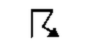
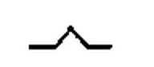
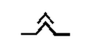
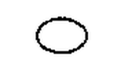
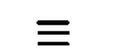
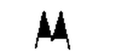
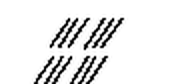
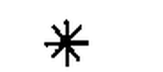
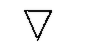
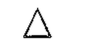
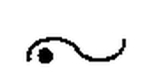
Turbulencia moderada lleva un pico y la fuerte lleva dos. Niebla extensa son tres rayas horizontales y neblina extensa solo dos (esa no entra, pero es la trampa). Chubasco es el triángulo hacia abajo y granizo el triángulo hacia arriba.
Complemento: así es una carta SIGWX de alto nivel (FL250–630). La de baja cota (SFC/150), la de los doce símbolos de arriba, usa los mismos símbolos para fenómenos y nubes. Toca los círculos rojos.
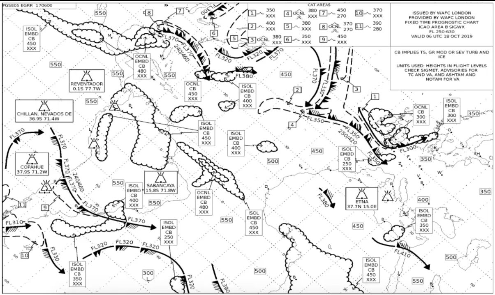
Lo que hay que mirar en este orden: a qué altura está, cómo es la base (plana o difusa), cómo crece (a lo ancho o a lo alto) y si precipita. Con esas cuatro cosas salen todas. En el test tienes el modo Nubes por foto para practicarlo.
Filamentos blancos sueltos, como mechones de pelo. Muy arriba y sin sombra propia: son cristales de hielo.
Ni precipitación al suelo ni engelamiento. Como mucho virga.
Granos blancos diminutos y muy juntos, en bancos regulares. Como el altocúmulo pero más pequeño y transparente, y sin sombra gris.
Sin precipitación. Puede avisar de turbulencia en altura.
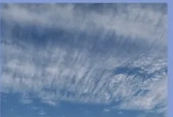
Velo fibroso que cubre el cielo sin ocultar el sol. Su firma es el halo.
Sin precipitación ni engelamiento.
Cielo «empedrado»: masas redondeadas en bancos, con sombra gris en su parte inferior. Esa sombra lo separa del cirrocúmulo.
Engelamiento y turbulencia. Más densa que el altostratus.
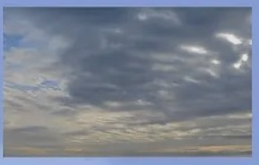
Manto gris de aspecto estriado. El sol se adivina detrás como una mancha, pero sin halo.
Engelamiento y gotas subenfriadas. Lluvia ligera y continua.
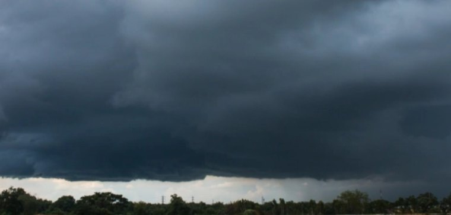
Capa gris oscura y espesa, de bordes difusos, que tapa el sol por completo. Nimbo significa lluvia.
Lluvia continua. Nunca precipitación severa.
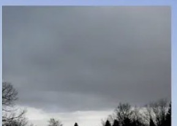
Capa gris uniforme y muy baja, sin estructura y de bordes difusos. La niebla es un estrato que toca el suelo.
Llovizna (DZ). Poco engelamiento: suele estar por encima de 0 °C.
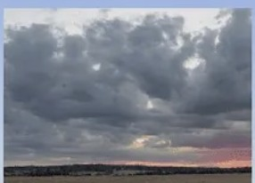
El estrato «que cumulea»: capa baja con bultos y claros, con algo de desarrollo vertical.
Más precipitación y más turbulencia que el estrato, pero nada severo.
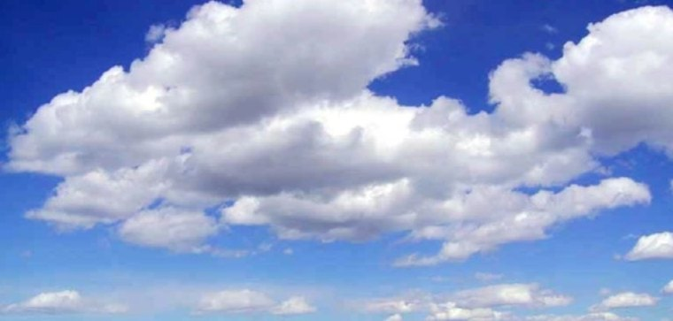
Algodones sueltos con la base plana, todos al mismo nivel y con cielo azul entre ellos. Más anchos que altos.
Turbulencia debajo y a su nivel, no por encima. Granizo poco frecuente.
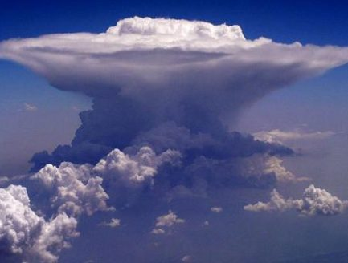
Del suelo a la tropopausa. Base oscura, cuerpo de coliflor, cortina de precipitación y yunque arriba, donde ya no puede subir más.
Tormenta, granizo, rayos y turbulencia muy fuerte. La nube a evitar.
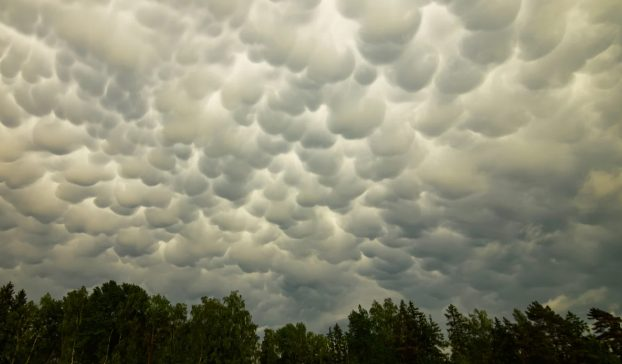
Bolsas colgantes bajo la base del yunque. Es una nube accesoria del Cb, no un tipo aparte.
Se asocia a Cb muy desarrollados: turbulencia fuerte cerca. Mantente lejos.
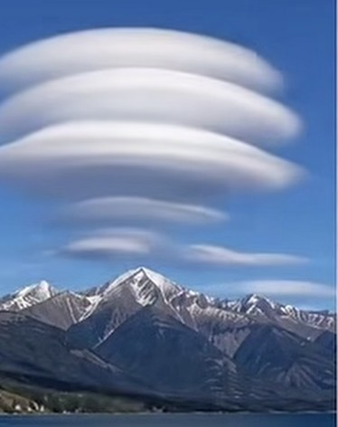
Lentes lisas apiladas sobre la montaña o a sotavento. Se queda inmóvil aunque el viento la atraviese.
La firma de las ondas de montaña: turbulencia y corrientes verticales fuertes.
Formato examen: 4 opciones, corrección al final, 75 % para aprobar. Muchas preguntas salen con otra redacción, otros números o al revés (etiqueta «variante»): hay que razonarlas, no reconocerlas. Las del trial y las de las diapositivas salen siempre con otra redacción, nunca con el enunciado original.